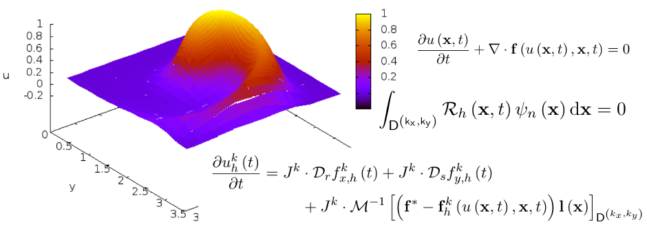

Discontinuous Galerking Methods
Differential equations have always been a main component in describing physical observations. Yet not all differential equations can be solved analytically and one has to turn to numerical solutions. There is a variaty of numerical schemes to find the solutions for such equations. One family of schemes are the so called Galerkin schemes that are based on the Galerkin Orthogonality that was developed by the russian mathematician Boris Grigorjewitsch Galjorkin. For my Bachelor- and Master-thesis, I worked on the so called Discontinuous Galerkin-Finite Element Methods (DGFEM) that was introduce by Reed and Hill in 1973
1-dimensional Discontinuous Galerkin Methods
For my Bachelor thesis, I compared the DGFEM to Central-Weighted-Essentially-Non-Oscillatory (CWENO) scheme, a member of the finite volume methods. I used both schemes to solve the 1D Afvection and 1D-Burgers Equation using different initial conditions. I found that the DGFEM is converting faster for smooth solutions. On the other hand around discontinuouties, the DGFEM shows a strong oscialltory behaviour which can be controlled by applying filter or slope limiters
2-dimensional Discontinuous Galerkin Methods
In the scope of my Master thesis, I wrote a 2-dimenstional DGFEM code that solves for various hyperbolical equations on a cartesian grid. The code also uses adaptive mesh refinement to improve the solution locally but, at the same time, to keep the computational costs low. The code is able to solve: first order conversation laws, the viscid Burgers equation, the Euler equations and the compressible Navier-Stokes equations.